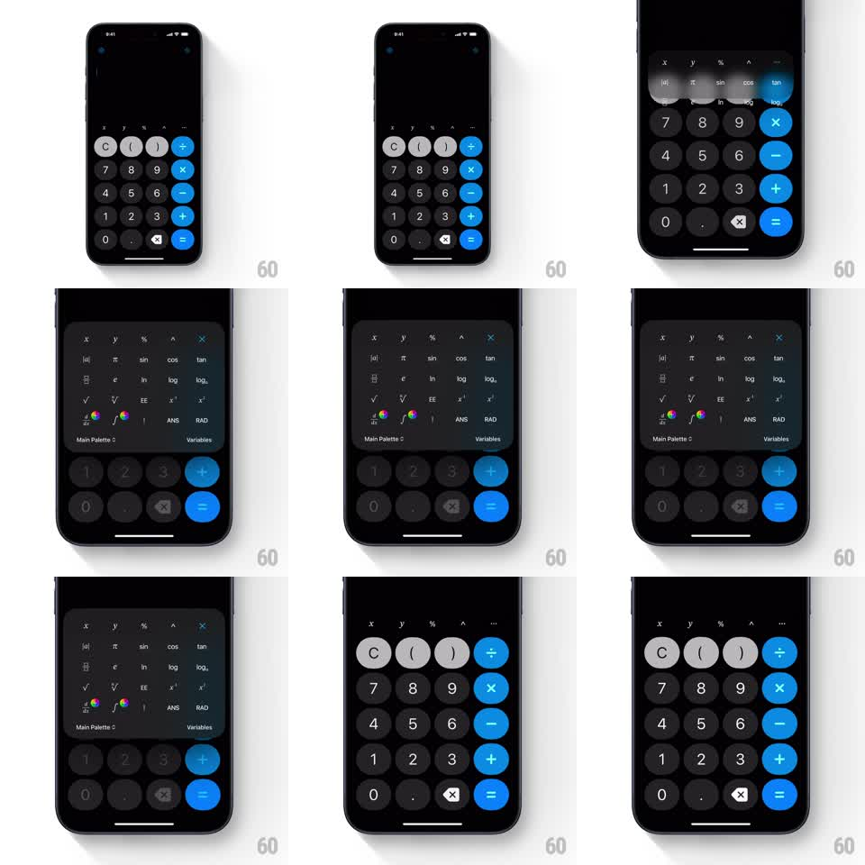

Media
Frame-by-frame

Rebuild this interaction 1:1: Acute calculator's function menu - tapping the expander reveals a panel of scientific function keys that scales and fades in over the standard keypad, which blurs and dims behind it.

Rebuild this interaction 1:1: Acute calculator's function menu - tapping the expander reveals a panel of scientific function keys that scales and fades in over the standard keypad, which blurs and dims behind it. ## Integration Integration: stack-agnostic spec - springs given as stiffness/damping, timed motions as duration + curve; map every value to your framework and animation library of choice. ## Scene Dark calculator: display on top, keypad of round dark keys with a blue operator column and blue equals key. Expanded state: a floating panel occupying the upper two-thirds - rows of small pill-shaped function keys (powers, trig, logs, roots, ANS, RAD), a footer row with "Main Palette" and "Variables" labels, and two color-wheel picker keys. The standard keypad stays visible below, blurred and darkened. ## Motion spec Pattern: scaling overlay panel with background blur. - Open: the panel scales 0.92 to 1.0 and fades in (opacity 0 to 1, 250ms, ease-out), anchored to the top of the keypad. - Simultaneously the keypad behind blurs (radius 0 to ~12px, 250ms) and dims (black overlay to 40%). - Panel keys stagger in by row, top to bottom (~40ms per row, opacity + translateY 6px to 0, 150ms each). - Close reverses: panel scales to 0.95 and fades (200ms, ease-in), blur and dim clear in the same beat. - Pressed function keys flash a lighter fill (100ms) - same treatment as the base keypad. ## Calibration - Blur and panel scale run together; blur arriving after the panel reads as two separate animations. - The panel is an overlay, not a layout shift - the base keypad never moves. ## Reduced motion Panel crossfades (150ms) without scale; background dims without blurring. ## Don't miss - The two color-wheel keys in the panel's bottom row are live theme pickers, not decorations. - The blue accent color is shared between the operator column and the panel's active states.